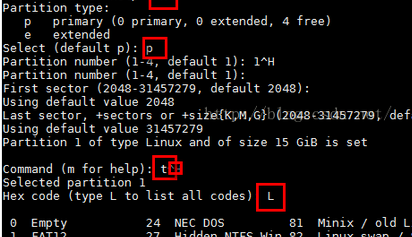

创建、扩展逻辑卷
https://www.linuxtechi.com/thin-provisioned-logical-volumes-centos-7-rhel-7/
磁盘扩容
VMware添加新磁盘
不重启识别磁盘
grep mpt /sys/class/scsi_host/host0/proc_name
grep mpt /sys/class/scsi_host/host1/proc_name
grep mpt /sys/class/scsi_host/host2/proc_name
查看哪个输出mptspi，假设是host2
或者ll /sys/class/scsi_disk/，查看是哪台host
echo "- - -" > /sys/class/scsi_host/host2/scan
查看磁盘信息
fdisk -l

对新盘进行分区
fdisk /dev/sdb



创建物理磁盘pv
pvcreate /dev/sdb1
显示创建的磁盘
pvdisplay

扩展卷组
vgextend centos /dev/sbd1 #centos:要扩展的卷组
lvextend –L +15G /dev/mapper/centos-root #要扩展的目录
在线调整xfs格式文件系统大小
xfs_growfs /dev/ mapper/centos-root